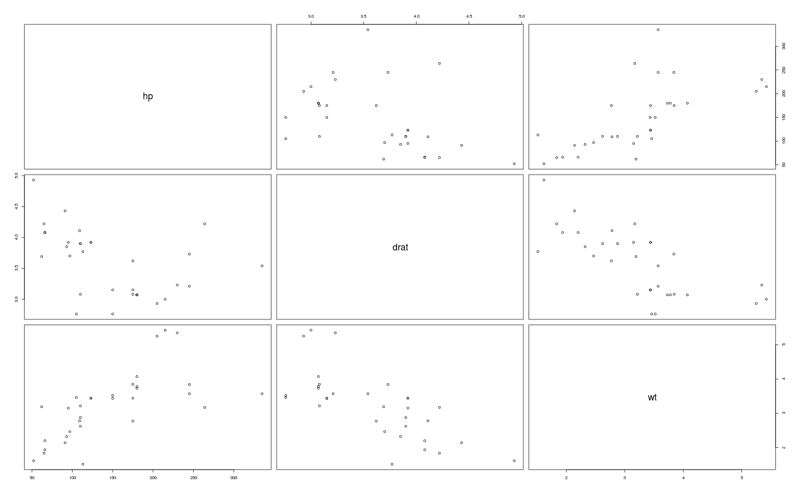
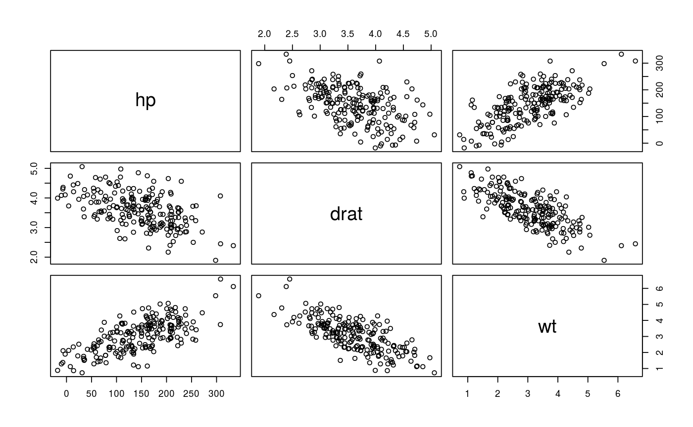

R/dataGen.r
Fast generation of (primitive) synthetic multivariate normal data.
dataGen(obj, ...)
| obj | an |
|---|---|
| ... | see possible arguments below
|
the generated synthetic data.
Uses the cholesky decomposition to generate synthetic data with approx. the same means and covariances. For details see at the reference.
With this method only multivariate normal distributed data with approxiomately the same covariance as the original data can be generated without reflecting the distribution of real complex data, which are, in general, not follows a multivariate normal distribution.
Have a look at http://crises2-deim.urv.cat/docs/publications/lncs/443.pdf
sdcMicroObj-class, shuffle
data(mtcars) cov(mtcars[,4:6])#> hp drat wt #> hp 4700.86694 -16.4511089 44.1926613 #> drat -16.45111 0.2858814 -0.3727207 #> wt 44.19266 -0.3727207 0.9573790cov(dataGen(mtcars[,4:6]))#> hp drat wt #> hp 4419.70027 -13.9514919 40.9857637 #> drat -13.95149 0.2828721 -0.3316736 #> wt 40.98576 -0.3316736 0.8840920pairs(mtcars[,4:6])pairs(dataGen(mtcars[,4:6]))## for objects of class sdcMicro: data(testdata2) sdc <- createSdcObj(testdata2, keyVars=c('urbrur','roof','walls','water','electcon','relat','sex'), numVars=c('expend','income','savings'), w='sampling_weight') sdc <- dataGen(sdc)